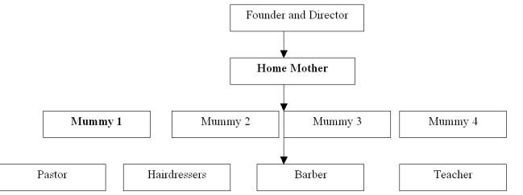

TNT has a home which is rented as an orphanage. A home mother managed the home with four mummies. All of these five personnel are female and widows as well. They have been well experience caregivers in taking care of their families and other children.
TNT has a total of total of seven volunteer staff. There are part time workers too including one pastor, one barber, and one teacher.
